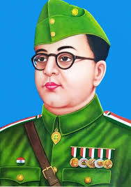

Netaji Subhas Chandra Bose (1897–1945) was a legendary Indian nationalist and freedom fighter. Rejecting a career in the British Civil Service, he led radical movements to liberate India, most famously taking command of the Indian National Army (INA) during World War II with the rallying cry: "Give me blood, and I shall give you freedom!
Bose's unwavering commitment to indian independence, his charismatic leadership, and his bold strategies made him a revered figure in indian history. He sought international support, including from axis powers, to fight against british colonial rule. Despite his conventional methods, bose's legancy endures as a symbol of courage, paratriotism, and the relentless pursuit of freedom in india.
| Name | subhas chandra bose |
|---|---|
| Born | 23 January 1897 |
| Place of birth | cuttack,odisha |
| Parents | janakinath bose(father) and prabhavati devi(mother) |
| Education | Ravenshaw collegeiate school(cuttack), B.A.in philosophy from presidency college(kolkata), university of cambridge(uk) |
| Notable ideologies | Radical nationalism,socialism,armed revolution |
| Political career | Elected president of the indian national congress(1938,1939) |
| Famous slogans | "give me blood,and i will promise you freedom!","Delhi chalo","jai hind" |
| Date of death | 18 Aug 1945 |